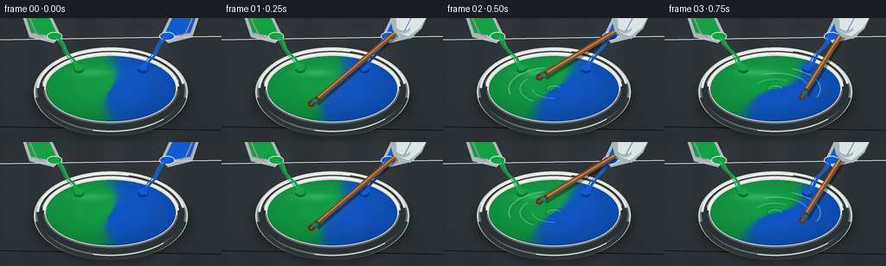
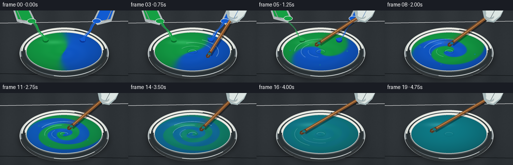

CODING AGENTS AS PIXEL WORLD MODELS
traex/GPT-5.6-Sol · phygen_123
点击播放 · 原生 RGB 像素
逐轮保存的候选
回放视频、检查图与代码变化。
每份候选均可单独播放。实际图片检查记录在下方工具轨迹中。
候选 01播放与检查图
点击播放 · 原生 RGB 像素


展开代码变化
--- 上一保存版本
+++ 本次保存版本
@@ -0,0 +1,284 @@
+from pathlib import Path
+import math
+import numpy as np
+from PIL import Image, ImageDraw, ImageFilter
+import artifact_io
+
+# Procedural RGB animation: equal green and blue paint streams are folded into
+# spiral bands by a fast-moving mixing paddle, then diffuse to uniform teal.
+W, H, N = 256, 144, 20
+S = 4
+SW, SH = W*S, H*S
+CASE_DIR = Path(__file__).resolve().parent
+rng = np.random.default_rng(12345)
+
+
+def sc(v):
+ return int(round(v*S))
+
+
+def box(coords):
+ return tuple(sc(v) for v in coords)
+
+
+def points(seq):
+ return [(sc(x), sc(y)) for x, y in seq]
+
+
+def smoothstep(x):
+ x = np.clip(x, 0.0, 1.0)
+ return x*x*(3.0-2.0*x)
+
+
+def ellipse_layer(base, bbox, fill, blur=0):
+ lay = Image.new('RGBA', (SW, SH), (0,0,0,0))
+ ImageDraw.Draw(lay).ellipse(box(bbox), fill=fill)
+ if blur:
+ lay = lay.filter(ImageFilter.GaussianBlur(sc(blur)))
+ base.alpha_composite(lay)
+
+
+def draw_polyline(draw, xy, fill, width):
+ draw.line(points(xy), fill=fill, width=sc(width), joint='curve')
+
+
+def curved_arc(draw, cx, cy, rx, ry, a0, a1, fill, width, samples=40):
+ aa = np.linspace(a0, a1, samples)
+ xy = [(cx + rx*math.cos(a), cy + ry*math.sin(a)) for a in aa]
+ draw_polyline(draw, xy, fill, width)
+
+
+def background():
+ yy, xx = np.mgrid[0:SH, 0:SW]
+ # Slate-grey worktop with a warm vignette and subtle fibrous texture.
+ vignette = np.sqrt(((xx-SW*.5)/(SW*.72))**2 + ((yy-SH*.43)/(SH*.88))**2)
+ grain = rng.normal(0, 1.5, (SH, SW))
+ streak = 1.8*np.sin(xx/37.0) + 0.8*np.sin((xx+yy*.22)/91.0)
+ base = np.empty((SH, SW, 4), dtype=np.uint8)
+ for c, val in enumerate((48, 53, 57)):
+ base[...,c] = np.clip(val + streak + grain - 15*np.maximum(vignette-.45,0), 0, 255)
+ base[...,3] = 255
+ im = Image.fromarray(base, 'RGBA')
+ # Fine seams in the work surface.
+ d = ImageDraw.Draw(im, 'RGBA')
+ d.line([(0, sc(25)), (SW, sc(21))], fill=(255,255,255,10), width=sc(1))
+ d.line([(0, sc(126)), (SW, sc(130))], fill=(10,14,16,30), width=sc(1))
+ return im
+
+
+def fluid_rgba(frame):
+ yy, xx = np.mgrid[0:SH, 0:SW]
+ cx, cy, rx, ry = 128*S, 82*S, 75*S, 38*S
+ X = (xx-cx)/rx
+ Y = (yy-cy)/ry
+ r = np.sqrt(X*X+Y*Y)
+ theta = np.arctan2(Y, X)
+ mask = r <= 1
+
+ # Rapid fold, then diffusion. Early frames retain two equal colored halves;
+ # middle frames form spirals; last frames converge precisely on equal mix.
+ p = frame/(N-1)
+ stir = smoothstep((p-0.10)/0.64)
+ diffusion = smoothstep((p-0.48)/0.43)
+ rotation = 1.1*frame
+ phase = theta - (0.4 + 14.0*stir)*(1-r)**1.30 - rotation*.15
+ phase += 0.33*np.sin(3*theta + 7*r - frame*.7)*stir
+ segregation = np.tanh(7.0*np.cos(phase))
+ # Retain alternating turquoise-blue/green ribbons, then collapse to 50/50.
+ contrast = (1.0-diffusion)*0.49
+ blue_fraction = .5 + contrast*segregation
+
+ green = np.array([20., 164., 70.])
+ blue = np.array([17., 92., 212.])
+ rgb = green[None,None,:]*(1-blue_fraction[...,None]) + blue[None,None,:]*blue_fraction[...,None]
+
+ # Thick wet paint: soft directional light, specular sheen, and faint ridges.
+ light = 0.86 + 0.16*np.clip((-X*.38-Y*.72+1)/2,0,1) - 0.12*r*r
+ ridge = (np.sin(16*r - 2.1*theta + frame*1.15) * (0.45+0.55*stir))
+ ridge *= (1-r)*4.0
+ rgb = rgb*light[...,None] + ridge[...,None]
+ # The fully blended result is a rich, unmistakably equal green-blue teal.
+ final_teal = np.array([15., 129., 142.])
+ finish = smoothstep((p-.76)/.18)
+ rgb = rgb*(1-finish) + final_teal[None,None,:]*light[...,None]*finish
+
+ # Broad glossy reflection near upper-left surface.
+ gloss = np.exp(-(((X+.28)/.42)**2 + ((Y+.49)/.15)**2)*2.0) * (22 + 5*np.sin(frame*.4))
+ rgb += gloss[...,None]
+ arr = np.zeros((SH,SW,4), dtype=np.uint8)
+ arr[...,:3] = np.clip(rgb,0,255).astype(np.uint8)
+ # Feather just the outermost antialiased boundary after downsampling.
+ arr[...,3] = (mask*255).astype(np.uint8)
+ return Image.fromarray(arr, 'RGBA')
+
+
+def draw_bowl(im, frame):
+ # Soft contact shadow and ceramic/steel bowl body.
+ ellipse_layer(im, (37,44,219,139), (0,0,0,88), blur=5)
+ d = ImageDraw.Draw(im, 'RGBA')
+ d.ellipse(box((39,34,217,137)), fill=(102,111,116,255), outline=(199,207,207,255), width=sc(2))
+ d.ellipse(box((43,37,213,130)), fill=(41,49,52,255))
+ # Lower rim catching warm light.
+ d.arc(box((40,34,216,137)), 8, 172, fill=(47,52,54,190), width=sc(5))
+ d.arc(box((42,34,214,133)), 183, 351, fill=(230,232,224,205), width=sc(3))
+ d.arc(box((47,39,209,128)), 190, 347, fill=(134,143,143,175), width=sc(2))
+ im.alpha_composite(fluid_rgba(frame))
+ d = ImageDraw.Draw(im, 'RGBA')
+ # Rim over surface gives the liquid a contained depth.
+ d.ellipse(box((51,42,205,122)), outline=(222,227,222,230), width=sc(2))
+ d.arc(box((49,40,207,124)), 184, 356, fill=(248,248,237,220), width=sc(2))
+ d.arc(box((50,41,206,123)), 4, 178, fill=(91,102,105,170), width=sc(2))
+ # Small metal highlights.
+ d.arc(box((43,37,213,132)), 205, 284, fill=(255,255,248,165), width=sc(1))
+ d.arc(box((43,37,213,132)), 44, 104, fill=(242,249,247,130), width=sc(1))
+
+
+def paint_stream(im, side, frame):
+ # Matched geometry ensures visibly equal amounts of each paint.
+ if frame > 6:
+ return
+ color = (23,166,70,255) if side < 0 else (17,92,214,255)
+ dark = (8,111,45,255) if side < 0 else (10,54,151,255)
+ lipx = 65 if side < 0 else 191
+ targetx = 91 if side < 0 else 165
+ phase = frame*.9 + (0 if side < 0 else math.pi)
+ narrowing = 1.0 - .68*smoothstep((frame-3)/3)
+ width = 5.6*narrowing
+ y0, y1 = 22, 59
+ ys = np.linspace(y0,y1,20)
+ center = lipx + (targetx-lipx)*(ys-y0)/(y1-y0) + 1.3*np.sin((ys-y0)*.24+phase)
+ left = [(x-width*(.50+.06*math.sin(y*.3)), y) for x,y in zip(center,ys)]
+ right = [(x+width*(.50+.06*math.sin(y*.3)), y) for x,y in zip(center,ys)][::-1]
+ ov = Image.new('RGBA',(SW,SH),(0,0,0,0)); d=ImageDraw.Draw(ov,'RGBA')
+ d.polygon(points(left+right), fill=color)
+ draw_polyline(d, [(x-width*.22,y) for x,y in zip(center,ys)], (255,255,255,34), 1)
+ # Impact puddle and thick splash crown.
+ d.ellipse(box((targetx-6,55,targetx+6,64)), fill=dark)
+ d.ellipse(box((targetx-5,54,targetx+5,61)), fill=color)
+ for j in range(3):
+ a = phase+j*2.05
+ x=targetx+math.cos(a)*(5+j*.7); y=57+math.sin(a)*(3+j*.35)
+ d.ellipse(box((x-1.4,y-1.1,x+1.4,y+1.1)),fill=color)
+ im.alpha_composite(ov)
+
+
+def draw_cups(im, frame):
+ if frame > 8:
+ return
+ lift = max(0,frame-4)*5.2
+ alpha = int(255*(1-smoothstep((frame-6)/2)))
+ ov=Image.new('RGBA',(SW,SH),(0,0,0,0)); d=ImageDraw.Draw(ov,'RGBA')
+ for side in (-1,1):
+ col=(21,160,67,alpha) if side<0 else (17,91,209,alpha)
+ edge=(226,232,230,alpha)
+ if side<0:
+ poly=[(24,-8-lift),(59,-3-lift),(70,20-lift),(62,29-lift),(34,22-lift)]
+ paint=[(29,-4-lift),(57,0-lift),(65,17-lift),(59,21-lift),(36,17-lift)]
+ rim=(54,16-lift,72,26-lift)
+ else:
+ poly=[(232,-8-lift),(197,-3-lift),(186,20-lift),(194,29-lift),(222,22-lift)]
+ paint=[(227,-4-lift),(199,0-lift),(191,17-lift),(197,21-lift),(220,17-lift)]
+ rim=(184,16-lift,202,26-lift)
+ d.polygon(points(poly), fill=(205,215,216,int(alpha*.80)), outline=edge)
+ d.polygon(points(paint), fill=col)
+ d.ellipse(box(rim), fill=col, outline=edge, width=sc(1))
+ # translucent measuring-cup shine, same on each side
+ if side<0:
+ draw_polyline(d,[(34,0-lift),(42,18-lift),(49,21-lift)],(255,255,255,int(alpha*.48)),1.5)
+ else:
+ draw_polyline(d,[(222,0-lift),(214,18-lift),(207,21-lift)],(255,255,255,int(alpha*.48)),1.5)
+ im.alpha_composite(ov)
+
+
+def draw_stir_wakes(im, frame):
+ if frame < 2:
+ return
+ p=frame/(N-1)
+ fade=1-smoothstep((p-.70)/.27)
+ ov=Image.new('RGBA',(SW,SH),(0,0,0,0)); d=ImageDraw.Draw(ov,'RGBA')
+ ang=frame*2.18
+ # Multiple curved wake lines and motion ghosts communicate vigorous speed.
+ for j,(rrx,rry) in enumerate(((52,25),(39,18),(25,11))):
+ a1=ang-j*.7
+ curved_arc(d,128,82,rrx,rry,a1-1.45,a1+.15,(226,255,247,int((90-j*18)*fade)),1.2,32)
+ curved_arc(d,128,82,rrx-3,rry-2,a1-1.32,a1-.3,(2,57,73,int((55-j*9)*fade)),1,28)
+ # A subtle central vortex persists into the uniform stage.
+ d.ellipse(box((118,77,138,87)), outline=(4,74,85,int(85*(.45+.55*fade))), width=sc(1))
+ d.arc(box((120,78,136,86)),180,358,fill=(173,236,225,int(110*(.4+.6*fade))),width=sc(1))
+ im.alpha_composite(ov)
+
+
+def draw_paddle_and_hand(im, frame):
+ if frame < 1:
+ return
+ ang=frame*2.18
+ # Elliptical orbit contact point; hand remains at upper right as tool pivots.
+ tipx=128+35*math.cos(ang)
+ tipy=82+17*math.sin(ang)
+ handx,handy=211,8
+ ov=Image.new('RGBA',(SW,SH),(0,0,0,0)); d=ImageDraw.Draw(ov,'RGBA')
+ # Two transparent previous positions emulate fast rotational motion without
+ # obscuring the changing paint bands.
+ for k,a in ((2,35),(1,55)):
+ old=ang-k*.22
+ ox=128+35*math.cos(old); oy=82+17*math.sin(old)
+ draw_polyline(d,[(handx,handy),(ox,oy)],(111,72,40,a),5)
+ # Paddle shadow, wooden shaft and narrow wet highlight.
+ draw_polyline(d,[(handx+1.5,handy+2),(tipx+2,tipy+3)],(0,0,0,90),7)
+ draw_polyline(d,[(handx,handy),(tipx,tipy)],(128,77,38,255),6)
+ draw_polyline(d,[(handx-1,handy),(tipx-1,tipy)],(211,146,81,220),1.5)
+ # Rounded paddle end aligned to shaft.
+ vx,vy=tipx-handx,tipy-handy; L=max(1,math.hypot(vx,vy)); ux,uy=vx/L,vy/L; px,py=-uy,ux
+ head=[(tipx+ux*7+px*4,tipy+uy*7+py*4),(tipx+ux*10,tipy+uy*10),(tipx+ux*7-px*4,tipy+uy*7-py*4),(tipx-ux*5-px*3,tipy-uy*5-py*3),(tipx-ux*5+px*3,tipy-uy*5+py*3)]
+ d.polygon(points(head),fill=(91,54,31,255))
+ draw_polyline(d,[(tipx-ux*2,tipy-uy*2),(tipx+ux*7,tipy+uy*7)],(206,147,89,130),1)
+ # Wet teal paint coating on submerged end.
+ d.ellipse(box((tipx-3.2,tipy-2.4,tipx+3.2,tipy+2.4)),fill=(14,119,132,180))
+ # Nitrile-gloved hand, cropped naturally at top edge.
+ glove=(220,229,226,255); glove_shadow=(166,183,184,255)
+ d.polygon(points([(194,-5),(239,-5),(231,12),(218,24),(205,22),(198,14)]),fill=glove_shadow)
+ d.polygon(points([(201,-5),(239,-5),(229,11),(216,21),(204,17)]),fill=glove)
+ # Wrapped thumb and fingers over handle.
+ d.ellipse(box((200,5,218,18)),fill=glove_shadow)
+ d.ellipse(box((202,4,218,14)),fill=glove)
+ d.arc(box((202,4,219,18)),25,145,fill=(250,253,245,180),width=sc(1))
+ d.line(points([(219,0),(211,15)]),fill=(145,163,166,150),width=sc(1))
+ im.alpha_composite(ov)
+
+
+def add_splashes(im, frame):
+ if not (4 <= frame <= 14):
+ return
+ ov=Image.new('RGBA',(SW,SH),(0,0,0,0)); d=ImageDraw.Draw(ov,'RGBA')
+ ang=frame*2.18
+ strength=1-smoothstep((frame-10)/5)
+ teal=(15,128,142,int(210*strength))
+ # Tiny droplets remain inside the bowl: energetic but physically controlled.
+ for j in range(4):
+ a=ang+j*1.63
+ rr=49+j*4
+ x=128+rr*math.cos(a); y=82+(rr*.47)*math.sin(a)
+ rad=1.1+(j%2)*.45
+ d.ellipse(box((x-rad,y-rad*.72,x+rad,y+rad*.72)),fill=teal)
+ im.alpha_composite(ov)
+
+
+def make_frame(i):
+ im=background()
+ # Containers are behind the bowl; streams land on top of the liquid.
+ draw_cups(im,i)
+ draw_bowl(im,i)
+ paint_stream(im,-1,i)
+ paint_stream(im,1,i)
+ draw_stir_wakes(im,i)
+ add_splashes(im,i)
+ draw_paddle_and_hand(im,i)
+ # Downsample gives clean, filmic antialiasing.
+ rgb=im.convert('RGB').resize((W,H),Image.Resampling.LANCZOS)
+ arr=np.asarray(rgb,dtype=np.uint8).copy()
+ return arr
+
+
+frames=np.stack([make_frame(i) for i in range(N)],axis=0)
+assert frames.shape==(20,144,256,3) and frames.dtype==np.uint8
+artifact_io.save(frames, CASE_DIR)
候选 02播放与检查图
点击播放 · 原生 RGB 像素

展开代码变化
--- 上一保存版本
+++ 本次保存版本
@@ -58,7 +58,7 @@
for c, val in enumerate((48, 53, 57)):
base[...,c] = np.clip(val + streak + grain - 15*np.maximum(vignette-.45,0), 0, 255)
base[...,3] = 255
- im = Image.fromarray(base, 'RGBA')
+ im = Image.fromarray(base)
# Fine seams in the work surface.
d = ImageDraw.Draw(im, 'RGBA')
d.line([(0, sc(25)), (SW, sc(21))], fill=(255,255,255,10), width=sc(1))
@@ -81,7 +81,7 @@
stir = smoothstep((p-0.10)/0.64)
diffusion = smoothstep((p-0.48)/0.43)
rotation = 1.1*frame
- phase = theta - (0.4 + 14.0*stir)*(1-r)**1.30 - rotation*.15
+ phase = theta - (0.4 + 14.0*stir)*np.clip(1-r, 0, None)**1.30 - rotation*.15
phase += 0.33*np.sin(3*theta + 7*r - frame*.7)*stir
segregation = np.tanh(7.0*np.cos(phase))
# Retain alternating turquoise-blue/green ribbons, then collapse to 50/50.
@@ -109,7 +109,7 @@
arr[...,:3] = np.clip(rgb,0,255).astype(np.uint8)
# Feather just the outermost antialiased boundary after downsampling.
arr[...,3] = (mask*255).astype(np.uint8)
- return Image.fromarray(arr, 'RGBA')
+ return Image.fromarray(arr)
def draw_bowl(im, frame):
可观测工具轨迹
实际执行的命令与返回图片。
命令 1exit 0
/bin/bash -lc "cat prompt.txt && printf '\\n--- GENERATION_RULES.md ---\\n' && cat GENERATION_RULES.md && printf '\\n--- task_spec.json ---\\n' && cat task_spec.json"
命令 2exit 0
/bin/bash -lc "find . -maxdepth 3 -type f -printf '%p\\n' | sort | sed -n '1,240p'"
命令 3exit 0
/bin/bash -lc "sed -n '1,260p' artifact_io.py"
命令 4exit 0
/bin/bash -lc "cat > generate.py <<'PY'
from pathlib import Path
import math
import numpy as np
from PIL import Image, ImageDraw, ImageFilter
import artifact_io
# Procedural RGB animation: equal green and blue paint streams are folded into
# spiral bands by a fast-moving mixing paddle, then diffuse to uniform teal.
W, H, N = 256, 144, 20
S = 4
SW, SH = W*S, H*S
CASE_DIR = Path(__file__).resolve().parent
rng = np.random.default_rng(12345)
def sc(v):
return int(round(v*S))
def box(coords):
return tuple(sc(v) for v in coords)
def points(seq):
return [(sc(x), sc(y)) for x, y in seq]
def smoothstep(x):
x = np.clip(x, 0.0, 1.0)
return x*x*(3.0-2.0*x)
def ellipse_layer(base, bbox, fill, blur=0):
lay = Image.new('RGBA', (SW, SH), (0,0,0,0))
ImageDraw.Draw(lay).ellipse(box(bbox), fill=fill)
if blur:
lay = lay.filter(ImageFilter.GaussianBlur(sc(blur)))
base.alpha_composite(lay)
def draw_polyline(draw, xy, fill, width):
draw.line(points(xy), fill=fill, width=sc(width), joint='curve')
def curved_arc(draw, cx, cy, rx, ry, a0, a1, fill, width, samples=40):
aa = np.linspace(a0, a1, samples)
xy = [(cx + rx*math.cos(a), cy + ry*math.sin(a)) for a in aa]
draw_polyline(draw, xy, fill, width)
def background():
yy, xx = np.mgrid[0:SH, 0:SW]
# Slate-grey worktop with a warm vignette and subtle fibrous texture.
vignette = np.sqrt(((xx-SW*.5)/(SW*.72))**2 + ((yy-SH*.43)/(SH*.88))**2)
grain = rng.normal(0, 1.5, (SH, SW))
streak = 1.8*np.sin(xx/37.0) + 0.8*np.sin((xx+yy*.22)/91.0)
base = np.empty((SH, SW, 4), dtype=np.uint8)
for c, val in enumerate((48, 53, 57)):
base[...,c] = np.clip(val + streak + grain - 15*np.maximum(vignette-.45,0), 0, 255)
base[...,3] = 255
im = Image.fromarray(base, 'RGBA')
# Fine seams in the work surface.
d = ImageDraw.Draw(im, 'RGBA')
d.line([(0, sc(25)), (SW, sc(21))], fill=(255,255,255,10), width=sc(1))
d.line([(0, sc(126)), (SW, sc(130))], fill=(10,14,16,30), width=sc(1))
return im
def fluid_rgba(frame):
yy, xx = np.mgrid[0:SH, 0:SW]
cx, cy, rx, ry = 128*S, 82*S, 75*S, 38*S
X = (xx-cx)/rx
Y = (yy-cy)/ry
r = np.sqrt(X*X+Y*Y)
theta = np.arctan2(Y, X)
mask = r <= 1
# Rapid fold, then diffusion. Early frames retain two equal colored halves;
# middle frames form spirals; last frames converge precisely on equal mix.
p = frame/(N-1)
stir = smoothstep((p-0.10)/0.64)
diffusion = smoothstep((p-0.48)/0.43)
rotation = 1.1*frame
phase = theta - (0.4 + 14.0*stir)*(1-r)**1.30 - rotation*.15
phase += 0.33*np.sin(3*theta + 7*r - frame*.7)*stir
segregation = np.tanh(7.0*np.cos(phase))
# Retain alternating turquoise-blue/green ribbons, then collapse to 50/50.
contrast = (1.0-diffusion)*0.49
blue_fraction = .5 + contrast*segregation
green = np.array([20., 164., 70.])
blue = np.array([17., 92., 212.])
rgb = green[None,None,:]*(1-blue_fraction[...,None]) + blue[None,None,:]*blue_fraction[...,None]
# Thick wet paint: soft directional light, specular sheen, and faint ridges.
light = 0.86 + 0.16*np.clip((-X*.38-Y*.72+1)/2,0,1) - 0.12*r*r
ridge = (np.sin(16*r - 2.1*theta + frame*1.15) * (0.45+0.55*stir))
ridge *= (1-r)*4.0
rgb = rgb*light[...,None] + ridge[...,None]
# The fully blended result is a rich, unmistakably equal green-blue teal.
final_teal = np.array([15., 129., 142.])
finish = smoothstep((p-.76)/.18)
rgb = rgb*(1-finish) + final_teal[None,None,:]*light[...,None]*finish
# Broad glossy reflection near upper-left surface.
gloss = np.exp(-(((X+.28)/.42)**2 + ((Y+.49)/.15)**2)*2.0) * (22 + 5*np.sin(frame*.4))
rgb += gloss[...,None]
arr = np.zeros((SH,SW,4), dtype=np.uint8)
arr[...,:3] = np.clip(rgb,0,255).astype(np.uint8)
# Feather just the outermost antialiased boundary after downsampling.
arr[...,3] = (mask*255).astype(np.uint8)
return Image.fromarray(arr, 'RGBA')
def draw_bowl(im, frame):
# Soft contact shadow and ceramic/steel bowl body.
ellipse_layer(im, (37,44,219,139), (0,0,0,88), blur=5)
d = ImageDraw.Draw(im, 'RGBA')
d.ellipse(box((39,34,217,137)), fill=(102,111,116,255), outline=(199,207,207,255), width=sc(2))
d.ellipse(box((43,37,213,130)), fill=(41,49,52,255))
# Lower rim catching warm light.
d.arc(box((40,34,216,137)), 8, 172, fill=(47,52,54,190), width=sc(5))
d.arc(box((42,34,214,133)), 183, 351, fill=(230,232,224,205), width=sc(3))
d.arc(box((47,39,209,128)), 190, 347, fill=(134,143,143,175), width=sc(2))
im.alpha_composite(fluid_rgba(frame))
d = ImageDraw.Draw(im, 'RGBA')
# Rim over surface gives the liquid a contained depth.
d.ellipse(box((51,42,205,122)), outline=(222,227,222,230), width=sc(2))
d.arc(box((49,40,207,124)), 184, 356, fill=(248,248,237,220), width=sc(2))
d.arc(box((50,41,206,123)), 4, 178, fill=(91,102,105,170), width=sc(2))
# Small metal highlights.
d.arc(box((43,37,213,132)), 205, 284, fill=(255,255,248,165), width=sc(1))
d.arc(box((43,37,213,132)), 44, 104, fill=(242,249,247,130), width=sc(1))
def paint_stream(im, side, frame):
# Matched geometry ensures visibly equal amounts of each paint.
if frame > 6:
return
color = (23,166,70,255) if side < 0 else (17,92,214,255)
dark = (8,111,45,255) if side < 0 else (10,54,151,255)
lipx = 65 if side < 0 else 191
targetx = 91 if side < 0 else 165
phase = frame*.9 + (0 if side < 0 else math.pi)
narrowing = 1.0 - .68*smoothstep((frame-3)/3)
width = 5.6*narrowing
y0, y1 = 22, 59
ys = np.linspace(y0,y1,20)
center = lipx + (targetx-lipx)*(ys-y0)/(y1-y0) + 1.3*np.sin((ys-y0)*.24+phase)
left = [(x-width*(.50+.06*math.sin(y*.3)), y) for x,y in zip(center,ys)]
right = [(x+width*(.50+.06*math.sin(y*.3)), y) for x,y in zip(center,ys)][::-1]
ov = Image.new('RGBA',(SW,SH),(0,0,0,0)); d=ImageDraw.Draw(ov,'RGBA')
d.polygon(points(left+right), fill=color)
draw_polyline(d, [(x-width*.22,y) for x,y in zip(center,ys)], (255,255,255,34), 1)
# Impact puddle and thick splash crown.
d.ellipse(box((targetx-6,55,targetx+6,64)), fill=dark)
d.ellipse(box((targetx-5,54,targetx+5,61)), fill=color)
for j in range(3):
a = phase+j*2.05
x=targetx+math.cos(a)*(5+j*.7); y=57+math.sin(a)*(3+j*.35)
d.ellipse(box((x-1.4,y-1.1,x+1.4,y+1.1)),fill=color)
im.alpha_composite(ov)
def draw_cups(im, frame):
if frame > 8:
return
lift = max(0,frame-4)*5.2
alpha = int(255*(1-smoothstep((frame-6)/2)))
ov=Image.new('RGBA',(SW,SH),(0,0,0,0)); d=ImageDraw.Draw(ov,'RGBA')
for side in (-1,1):
col=(21,160,67,alpha) if side<0 else (17,91,209,alpha)
edge=(226,232,230,alpha)
if side<0:
poly=[(24,-8-lift),(59,-3-lift),(70,20-lift),(62,29-lift),(34,22-lift)]
paint=[(29,-4-lift),(57,0-lift),(65,17-lift),(59,21-lift),(36,17-lift)]
rim=(54,16-lift,72,26-lift)
else:
poly=[(232,-8-lift),(197,-3-lift),(186,20-lift),(194,29-lift),(222,22-lift)]
paint=[(227,-4-lift),(199,0-lift),(191,17-lift),(197,21-lift),(220,17-lift)]
rim=(184,16-lift,202,26-lift)
d.polygon(points(poly), fill=(205,215,216,int(alpha*.80)), outline=edge)
d.polygon(points(paint), fill=col)
d.ellipse(box(rim), fill=col, outline=edge, width=sc(1))
# translucent measuring-cup shine, same on each side
if side<0:
draw_polyline(d,[(34,0-lift),(42,18-lift),(49,21-lift)],(255,255,255,int(alpha*.48)),1.5)
else:
draw_polyline(d,[(222,0-lift),(214,18-lift),(207,21-lift)],(255,255,255,int(alpha*.48)),1.5)
im.alpha_composite(ov)
def draw_stir_wakes(im, frame):
if frame < 2:
return
p=frame/(N-1)
fade=1-smoothstep((p-.70)/.27)
ov=Image.new('RGBA',(SW,SH),(0,0,0,0)); d=ImageDraw.Draw(ov,'RGBA')
ang=frame*2.18
# Multiple curved wake lines and motion ghosts communicate vigorous speed.
for j,(rrx,rry) in enumerate(((52,25),(39,18),(25,11))):
a1=ang-j*.7
curved_arc(d,128,82,rrx,rry,a1-1.45,a1+.15,(226,255,247,int((90-j*18)*fade)),1.2,32)
curved_arc(d,128,82,rrx-3,rry-2,a1-1.32,a1-.3,(2,57,73,int((55-j*9)*fade)),1,28)
# A subtle central vortex persists into the uniform stage.
d.ellipse(box((118,77,138,87)), outline=(4,74,85,int(85*(.45+.55*fade))), width=sc(1))
d.arc(box((120,78,136,86)),180,358,fill=(173,236,225,int(110*(.4+.6*fade))),width=sc(1))
im.alpha_composite(ov)
def draw_paddle_and_hand(im, frame):
if frame < 1:
return
ang=frame*2.18
# Elliptical orbit contact point; hand remains at upper right as tool pivots.
tipx=128+35*math.cos(ang)
tipy=82+17*math.sin(ang)
handx,handy=211,8
ov=Image.new('RGBA',(SW,SH),(0,0,0,0)); d=ImageDraw.Draw(ov,'RGBA')
# Two transparent previous positions emulate fast rotational motion without
# obscuring the changing paint bands.
for k,a in ((2,35),(1,55)):
old=ang-k*.22
ox=128+35*math.cos(old); oy=82+17*math.sin(old)
draw_polyline(d,[(handx,handy),(ox,oy)],(111,72,40,a),5)
# Paddle shadow, wooden shaft and narrow wet highlight.
draw_polyline(d,[(handx+1.5,handy+2),(tipx+2,tipy+3)],(0,0,0,90),7)
draw_polyline(d,[(handx,handy),(tipx,tipy)],(128,77,38,255),6)
draw_polyline(d,[(handx-1,handy),(tipx-1,tipy)],(211,146,81,220),1.5)
# Rounded paddle end aligned to shaft.
vx,vy=tipx-handx,tipy-handy; L=max(1,math.hypot(vx,vy)); ux,uy=vx/L,vy/L; px,py=-uy,ux
head=[(tipx+ux*7+px*4,tipy+uy*7+py*4),(tipx+ux*10,tipy+uy*10),(tipx+ux*7-px*4,tipy+uy*7-py*4),(tipx-ux*5-px*3,tipy-uy*5-py*3),(tipx-ux*5+px*3,tipy-uy*5+py*3)]
d.polygon(points(head),fill=(91,54,31,255))
draw_polyline(d,[(tipx-ux*2,tipy-uy*2),(tipx+ux*7,tipy+uy*7)],(206,147,89,130),1)
# Wet teal paint coating on submerged end.
d.ellipse(box((tipx-3.2,tipy-2.4,tipx+3.2,tipy+2.4)),fill=(14,119,132,180))
# Nitrile-gloved hand, cropped naturally at top edge.
glove=(220,229,226,255); glove_shadow=(166,183,184,255)
d.polygon(points([(194,-5),(239,-5),(231,12),(218,24),(205,22),(198,14)]),fill=glove_shadow)
d.polygon(points([(201,-5),(239,-5),(229,11),(216,21),(204,17)]),fill=glove)
# Wrapped thumb and fingers over handle.
d.ellipse(box((200,5,218,18)),fill=glove_shadow)
d.ellipse(box((202,4,218,14)),fill=glove)
d.arc(box((202,4,219,18)),25,145,fill=(250,253,245,180),width=sc(1))
d.line(points([(219,0),(211,15)]),fill=(145,163,166,150),width=sc(1))
im.alpha_composite(ov)
def add_splashes(im, frame):
if not (4 <= frame <= 14):
return
ov=Image.new('RGBA',(SW,SH),(0,0,0,0)); d=ImageDraw.Draw(ov,'RGBA')
ang=frame*2.18
strength=1-smoothstep((frame-10)/5)
teal=(15,128,142,int(210*strength))
# Tiny droplets remain inside the bowl: energetic but physically controlled.
for j in range(4):
a=ang+j*1.63
rr=49+j*4
x=128+rr*math.cos(a); y=82+(rr*.47)*math.sin(a)
rad=1.1+(j%2)*.45
d.ellipse(box((x-rad,y-rad*.72,x+rad,y+rad*.72)),fill=teal)
im.alpha_composite(ov)
def make_frame(i):
im=background()
# Containers are behind the bowl; streams land on top of the liquid.
draw_cups(im,i)
draw_bowl(im,i)
paint_stream(im,-1,i)
paint_stream(im,1,i)
draw_stir_wakes(im,i)
add_splashes(im,i)
draw_paddle_and_hand(im,i)
# Downsample gives clean, filmic antialiasing.
rgb=im.convert('RGB').resize((W,H),Image.Resampling.LANCZOS)
arr=np.asarray(rgb,dtype=np.uint8).copy()
return arr
frames=np.stack([make_frame(i) for i in range(N)],axis=0)
assert frames.shape==(20,144,256,3) and frames.dtype==np.uint8
artifact_io.save(frames, CASE_DIR)
PY
python generate.py
ls -lh pixels.npz inspection.png transition_check.png index.html frames/00.png frames/19.png"命令 5exit 0
/bin/bash -lc 'python -m py_compile generate.py artifact_io.py'
命令 6exit 0
/bin/bash -lc "python generate.py && python - <<'PY'
import json, numpy as np
from PIL import Image
from pathlib import Path
p=Path('.')
s=json.loads((p/'task_spec.json').read_text())
z=np.load(p/'pixels.npz')['pixels']
imgs=[np.asarray(Image.open(p/'frames'/f'{i:02d}.png').convert('RGB')) for i in range(s['frames'])]
a=np.stack(imgs)
print('frames',a.shape,a.dtype,'range',int(a.min()),int(a.max()))
print('packed',z.shape,z.dtype)
print('consecutive_MAE',[round(float(np.abs(a[i].astype(float)-a[i-1]).mean()),2) for i in range(1,20)])
print('required', {x:(p/x).exists() for x in ['generate.py','pixels.npz','index.html','inspection.png','transition_check.png']})
PY"视觉工具实际返回图片 1

保存候选 2 份；完成命令 6 次；可验证图片返回 1 张。原始 API 响应与完整日志保留在本地。